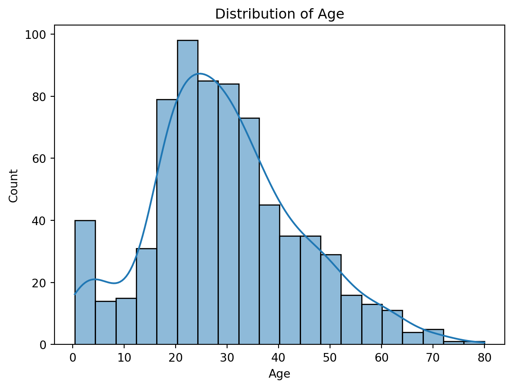
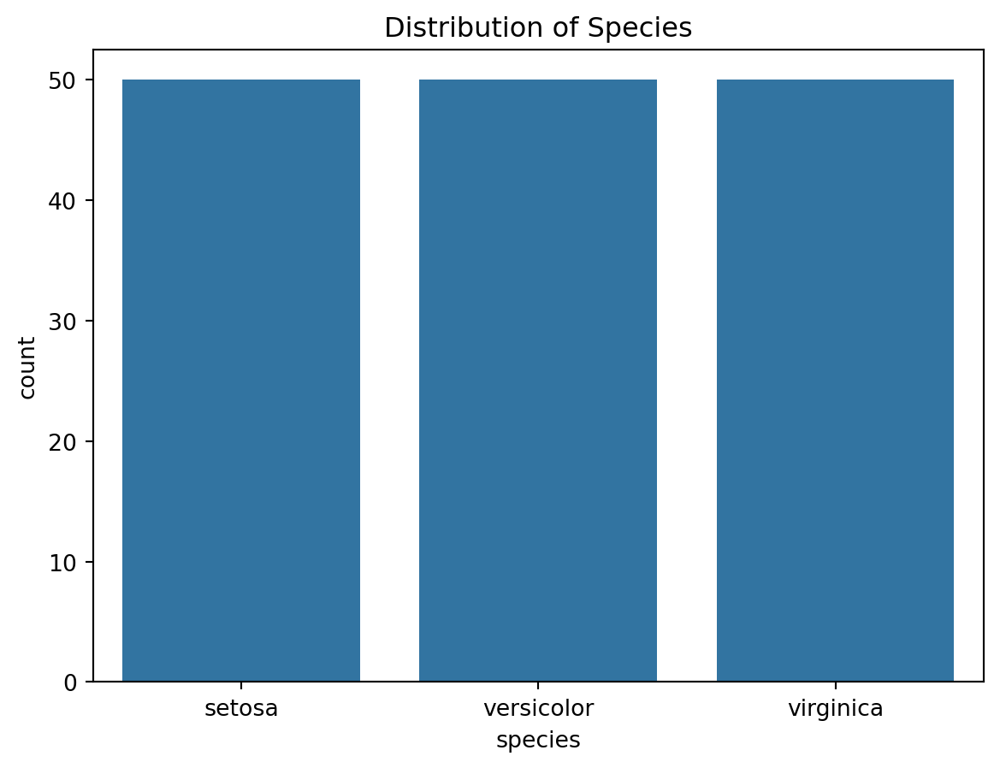

Classification is a fundamental concept in machine learning that involves assigning predefined labels to input data points based on their features. There are several types of classification algorithms, each suited to different scenarios. Multi-label Classification allows instances to be assigned to multiple classes simultaneously. For instance, a news article might belong to categories like “Politics,” “Science,” and “Technology” simultaneously. The mathematical formulation involves extending binary classification concepts to multiple classes.
Binary Classification is the simplest form, where the task involves distinguishing between two classes. For instance, predicting whether an email is spam or not. The mathematical formulation often includes a decision boundary, dividing the feature space into regions associated with each class.
Multiclass Classification extends the concept to scenarios with more than two classes. A classic example is handwritten digit recognition, where the goal is to classify digits from 0 to 9. Mathematical formulations usually involve multiple decision boundaries, each separating one class from the rest.
Multi-label Classification allows instances to be assigned to multiple classes simultaneously. For instance, a news article might belong to categories like “Politics,” “Science,” and “Technology” simultaneously. The mathematical formulation involves extending binary classification concepts to multiple classes.
Performance Metrics
A confusion matrix is a performance measurement tool for classification algorithms, providing a detailed breakdown of the model’s predictions and actual outcomes. It is particularly useful for evaluating the performance of binary classification models but can be extended to multi-class scenarios as well. The confusion matrix is organized into four main terms:
True Positives (TP): The number of instances correctly predicted as positive (correctly identified as belonging to the class of interest).
True Negatives (TN): The number of instances correctly predicted as negative (correctly identified as not belonging to the class of interest).
False Positives (FP): Also known as Type I errors, the number of instances incorrectly predicted as positive (instances that do not belong to the class of interest but are predicted as such).
False Negatives (FN): Also known as Type II errors, the number of instances incorrectly predicted as negative (instances that belong to the class of interest but are predicted as not belonging).
Precision, also known as positive predictive value, measures the accuracy of the positive predictions made by the model. It is the ratio of correctly predicted positive observations to the total predicted positives. Precision is particularly relevant when the cost of false positives is high.
Precision = TP/TP+FP
Recall measures the ability of the model to capture all the positive instances. It is the ratio of correctly predicted positive observations to the total actual positives. The formula is:
Recall= TP/TP+FN
Recall is important when the cost of false negatives is high, as it focuses on minimizing instances where positive cases are incorrectly classified as negative.
The F1 score is the harmonic mean of precision and recall, providing a balanced measure that considers both false positives and false negatives. It ranges between 0 and 1, with higher values indicating better performance. The formula is:
F1 Score=2× Precision x Recall/Precision + Recall F1 score is particularly useful when there is an imbalance between the classes or when both false positives and false negatives need to be considered.
ROC Curve: Receiver Operating Characteristic (ROC) curve is a graphical representation of a binary classification model’s performance at various classification thresholds. It illustrates the trade-off between the true positive rate (sensitivity) and the false positive rate (1 - specificity) across different threshold values. The ROC curve is created by plotting the TPR against the FPR at various threshold values. The area under the ROC curve (AUC-ROC) is a common metric used to quantify the overall performance of the model. AUC-ROC ranges from 0 to 1, where a higher value indicates better performance.
Binary Classification
Logistic Regression is a fundamental machine learning algorithm primarily used for binary and multi-class classification tasks. Unlike linear regression, which predicts continuous values, logistic regression predicts the probability that an input belongs to a specific class. The core of logistic regression lies in the sigmoid function, mapping the linear combination of input features to a range between 0 and 1. This probability is then used to make a binary decision. Logistic Regression finds widespread use in various fields, such as finance, healthcare, and marketing, for tasks like predicting customer churn, credit default, disease diagnosis, and sentiment analysis. Its simplicity, interpretability, and efficiency make it a popular choice for both beginners and professionals in machine learning. The algorithm’s predictive power, coupled with its ability to provide insights into the impact of individual features, contributes to its versatility across different domains.
Logistic regression can be used for binary and multi-class classification problems. The output is a probability that the given input belongs to a particular class. The sigmoid function (also called logistic function) is crucial in Logistic Regression. It maps any real-valued number to a value between 0 and 1.
σ(z)= 1/(1+e^−z)
z is a linear combination of input features, and the sigmoid function ensures that the output is a probability.
The hypothesis function for Logistic Regression is defined as:
h_θ(x)=σ(θ^Tx),
where θ are the parameters to be learned, and x is the input feature vector.
The cost function is defined as the negative log-likelihood: J(θ)=−1/m ∑_i=1 ^m [y^(i) log(h_θ(x(i)))+(1−y(i))log(1−h_θ)(x^(i))] Minimizing the cost function helps in finding the optimal parameters θ.
We train the algorithm using Gradient Descent where the parameters θ are updated iteratively using the gradient descent algorithm, as follows,
θ_j :=θ_j−α(1/m)∑i=1 m(h_θ(x(i))−y(i))x_j(i) and α is the learning rate.
We use the open-source “Titanic” dataset for Logistic Regression. In the Titanic dataset, the task is to predict whether a passenger survived or not based on various features. Specifically, the binary classification target variable is “Survived,” which takes the value of 1 if the passenger survived and 0 if the passenger did not survive. The features used for prediction include information such as passenger class (Pclass), sex (Sex), age (Age), the number of siblings/spouses aboard (SibSp), the number of parents/children aboard (Parch), and the fare paid (Fare). The goal is to build a Logistic Regression model that can learn from these features and accurately classify whether a passenger survived the Titanic disaster or not.
import numpy as npimport pandas as pdimport matplotlib.pyplot as pltfrom sklearn.model_selection import train_test_splitfrom sklearn.linear_model import LogisticRegressionfrom sklearn.metrics import precision_score, recall_score, f1_score, roc_curve, auc, confusion_matrixfrom sklearn.preprocessing import LabelEncoderfrom sklearn.datasets import fetch_openmlimport seaborn as sns# Load the Titanic datasettitanic = pd.read_csv('titanic.csv')titanic_data = titanic# Data preprocessing (handle missing values, encode categorical variables, etc.)# ...# Select relevant features and target variableX = titanic_data[['Pclass', 'Sex', 'Age', 'SibSp', 'Parch', 'Fare']]y = titanic_data['Survived']# Convert categorical variables to numericallabel_encoder = LabelEncoder()X['Sex'] = label_encoder.fit_transform(X['Sex'])# Handle missing values (e.g., fill missing ages with the mean)X['Age'].fillna(X['Age'].mean(), inplace=True)# Split the dataset into training and testing setsX_train, X_test, y_train, y_test = train_test_split(X, y, test_size=0.2, random_state=42)# Initialize and train the Logistic Regression modelmodel = LogisticRegression()model.fit(X_train, y_train)# Make predictions on the test sety_pred = model.predict(X_test)y_prob = model.predict_proba(X_test)[:, 1]# Calculate precision, recall, and F1 scoreprecision = precision_score(y_test, y_pred)recall = recall_score(y_test, y_pred)f1 = f1_score(y_test, y_pred)print(f"Precision: {precision:.2f}")print(f"Recall: {recall:.2f}")print(f"F1 Score: {f1:.2f}")# Calculate ROC curve and AUCfpr, tpr, thresholds = roc_curve(y_test, y_prob)roc_auc = auc(fpr, tpr)# Plot the ROC curveplt.figure(figsize=(8, 8))plt.plot(fpr, tpr, color='darkorange', lw=2, label=f'AUC = {roc_auc:.2f}')plt.plot([0, 1], [0, 1], color='navy', lw=2, linestyle='--')plt.xlabel('False Positive Rate (FPR)')plt.ylabel('True Positive Rate (TPR)')plt.title('Receiver Operating Characteristic (ROC) Curve')plt.legend(loc='lower right')plt.show()# Generate and display the confusion matrix with blue colorconf_matrix = confusion_matrix(y_test, y_pred)plt.figure(figsize=(6, 6))sns.heatmap(conf_matrix, annot=True, fmt='d', cmap='Blues', linewidths=.5, square=True)plt.xlabel('Predicted')plt.ylabel('Actual')plt.title('Confusion Matrix')plt.show()
/tmp/ipykernel_172867/3417729564.py:23: SettingWithCopyWarning:
A value is trying to be set on a copy of a slice from a DataFrame.
Try using .loc[row_indexer,col_indexer] = value instead
See the caveats in the documentation: https://pandas.pydata.org/pandas-docs/stable/user_guide/indexing.html#returning-a-view-versus-a-copy
/tmp/ipykernel_172867/3417729564.py:26: SettingWithCopyWarning:
A value is trying to be set on a copy of a slice from a DataFrame
See the caveats in the documentation: https://pandas.pydata.org/pandas-docs/stable/user_guide/indexing.html#returning-a-view-versus-a-copy
Precision: 0.80
Recall: 0.72
F1 Score: 0.76

We can see that our model has high accuracy in predicting the output class and also exhibits, high levels of True Postive and True Negative rates, and low levels of False Positve and False Negative rates resulting in higher precision, recall and F1 scores as well.
Multi-Class Classification
Multi-class classification is a machine learning task where the goal is to classify instances into one of three or more classes or categories. Unlike binary classification, which involves distinguishing between only two classes, multi-class classification extends this concept to scenarios where there are multiple classes.
A Decision Tree is a powerful and interpretable machine learning algorithm used for both classification and regression tasks. It works by recursively partitioning the input space based on the features, ultimately creating a tree-like structure where each leaf node represents a class label or a regression value. In the context of classification, I’ll explain the Decision Tree algorithm and its mathematical formulation.
Gini Impurity (for Classification): Given a node with K classes, the Gini impurity (G) is calculated as:
G=1−∑i=1K (p_i)^2
Here, p_i is the probability of class i in the node.
Information Gain (for Feature Selection): The information gain (IG) measures the reduction in entropy (or increase in purity) after a dataset is split on a particular feature. Higher information gain indicates a better feature for splitting.
IG(D,A)=H(D)−∑v=1V ∣D_v∣/∣D| H(D_v) where D is the dataset, A is the feature, V is the number of values for feature A, D_v is the subset of D for which feature A has the v-th value, and H is the entropy.
Decision Rule: At each node, a decision rule is formed based on the selected feature and a threshold. For example, “If petal length ≤ 2.45 cm, go left; otherwise, go right.”
The Decision Tree algorithm is defined as follows,
Feature Selection: The algorithm selects the best feature to split the data at each node. The “best” feature is chosen based on criteria like Gini impurity or information gain.
Node Splitting: The selected feature is used to split the dataset into subsets. Each subset is associated with a branch emanating from the node.
Recursive Process: The splitting process is applied recursively to each subset, creating child nodes. This continues until a stopping criterion is met, such as a maximum depth or a minimum number of samples per leaf.
Leaf Node Assignment: Each leaf node is assigned a class label based on the majority class of instances in that node.
To illustrate, let’s use the famous Iris dataset for multiclass classification. The goal is to predict the species of iris flowers based on features like sepal length, sepal width, petal length, and petal width. The code example in Python using scikit-learn demonstrates a simple decision tree classifier for this task.
import numpy as npimport pandas as pdimport matplotlib.pyplot as pltimport seaborn as snsfrom sklearn.model_selection import train_test_splitfrom sklearn.tree import DecisionTreeClassifierfrom sklearn.metrics import precision_score, recall_score, f1_score, roc_curve, auc, confusion_matrixfrom sklearn.datasets import load_iris# Load the Iris datasetiris = load_iris()X = pd.DataFrame(iris.data, columns=iris.feature_names)y = pd.DataFrame(iris.target, columns=['species'])# Split the dataset into training and testing setsX_train, X_test, y_train, y_test = train_test_split(X, y, test_size=0.2, random_state=42)# Initialize and train the Decision Tree Classifiermodel = DecisionTreeClassifier()model.fit(X_train, y_train)# Make predictions on the test sety_pred = model.predict(X_test)y_prob = model.predict_proba(X_test) # Decision Trees don't have predict_proba for multi-class, so use decision_function for ROC# Calculate precision, recall, and F1 scoreprecision = precision_score(y_test, y_pred, average='weighted')recall = recall_score(y_test, y_pred, average='weighted')f1 = f1_score(y_test, y_pred, average='weighted')# Print precision, recall, and F1 scoreprint(f"Precision: {precision:.4f}")print(f"Recall: {recall:.4f}")print(f"F1 Score: {f1:.4f}")# Calculate ROC curve and AUCfpr =dict()tpr =dict()roc_auc =dict()for i inrange(3): # Three classes in Iris dataset fpr[i], tpr[i], _ = roc_curve((y_test == i).astype(int), y_prob[:, i]) roc_auc[i] = auc(fpr[i], tpr[i])# Plot the ROC curveplt.figure(figsize=(8, 8))for i inrange(3): plt.plot(fpr[i], tpr[i], lw=2, label=f'Class {i} (AUC = {roc_auc[i]:.2f})')plt.plot([0, 1], [0, 1], color='navy', lw=2, linestyle='--')plt.xlabel('False Positive Rate (FPR)')plt.ylabel('True Positive Rate (TPR)')plt.title('Receiver Operating Characteristic (ROC) Curve')plt.legend(loc='lower right')plt.show()# Generate and display the confusion matrix with blue colorconf_matrix = confusion_matrix(y_test, y_pred)plt.figure(figsize=(6, 6))sns.heatmap(conf_matrix, annot=True, fmt='d', cmap='Blues', linewidths=.5, square=True)plt.xlabel('Predicted')plt.ylabel('Actual')plt.title('Confusion Matrix')plt.show()
Precision: 1.0000
Recall: 1.0000
F1 Score: 1.0000
We can see that our model has high accuracy in predicting the output class and also exhibits, high levels of True Postive and True Negative rates, and low levels of False Positve and False Negative rates resulting in higher precision, recall and F1 scores as well.
Multi-Label Classification
Multi-label classification is a machine learning task where each instance is associated with multiple labels simultaneously. In contrast to traditional single-label classification, where an instance is assigned to one and only one class, multi-label classification allows an instance to belong to multiple classes or categories. This scenario arises in real-world problems where objects or data points may exhibit characteristics of more than one category.
One common algorithm used for multi-label classification is the k-Nearest Neighbors (KNN) algorithm. KNN is a simple and intuitive algorithm that classifies a data point based on the majority class among its k-nearest neighbors. In the context of multi-label classification, KNN can be extended to predict multiple labels by considering the labels of its nearest neighbors and applying a suitable strategy for combining them.
Use cases for multi-label classification are diverse. For example, in text categorization, a document can belong to multiple topics simultaneously. In image classification, an image might contain several objects, each requiring its own label. Bioinformatics applications, such as predicting the functions of genes, also involve multi-label classification.
The mathematical formulation for the multi-label KNN algorithm involves extending the traditional KNN approach to handle multiple labels. A straightforward strategy is to assign labels based on the majority vote among the k-nearest neighbors. However, more sophisticated methods, like distance-weighted voting or considering label relationships, can be employed to improve performance.
import numpy as npimport pandas as pdimport matplotlib.pyplot as pltimport seaborn as snsfrom sklearn.model_selection import train_test_splitfrom sklearn.neighbors import KNeighborsClassifierfrom sklearn.metrics import precision_score, recall_score, f1_score, roc_curve, auc, confusion_matrixfrom sklearn.datasets import load_digitsfrom sklearn.preprocessing import MultiLabelBinarizer# Load the Digits dataset (modified for multi-label simulation)digits = load_digits()X = pd.DataFrame(digits.data)y = np.random.randint(2, size=(len(digits.target), 5)) # Simulating multi-labels (5 binary labels)# Split the dataset into training and testing setsX_train, X_test, y_train, y_test = train_test_split(X, y, test_size=0.2, random_state=42)# Initialize and train the KNN classifierknn_model = KNeighborsClassifier(n_neighbors=5)knn_model.fit(X_train, y_train)# Make predictions on the test sety_pred = knn_model.predict(X_test)y_prob = knn_model.predict_proba(X_test) # KNN doesn't have predict_proba for multi-label, so using decision_function for ROC# Calculate precision, recall, and F1 scoreprecision = precision_score(y_test, y_pred, average='weighted')recall = recall_score(y_test, y_pred, average='weighted')f1 = f1_score(y_test, y_pred, average='weighted')# Print precision, recall, and F1 scoreprint(f"Precision: {precision:.4f}")print(f"Recall: {recall:.4f}")print(f"F1 Score: {f1:.4f}")# Generate and display the confusion matrix with blue colorconf_matrix = confusion_matrix(y_test.argmax(axis=1), y_pred.argmax(axis=1))plt.figure(figsize=(8, 8))sns.heatmap(conf_matrix, annot=True, fmt='d', cmap='Blues', linewidths=.5, square=True)plt.xlabel('Predicted Label')plt.ylabel('Actual Label')plt.title('Confusion Matrix')plt.show()
Precision: 0.5281
Recall: 0.5185
F1 Score: 0.5210

In a multi-class classification problem, each instance is assigned to one and only one class. In contrast, in a multi-label classification problem, each instance can be associated with multiple classes. To simulate a multi-label scenario using a dataset that is originally designed for multi-class classification (like the Digits dataset), we need to modify the target labels to represent this multi-label structure.
Here’s how we simulate multi-labels in this example using the Digits dataset:
Original Labels (Multi-Class): The Digits dataset originally contains labels representing digits from 0 to 9. Each instance is assigned a single digit label.
Simulated Multi-Labels: To simulate a multi-label scenario, we generate random binary labels for each instance. Each binary label corresponds to a specific condition or characteristic. For simplicity, in this example, I generated 5 binary labels for each instance using np.random.randint(2, size=(len(digits.target), 5)). Each binary label can be interpreted as a separate condition that the instance may or may not satisfy.